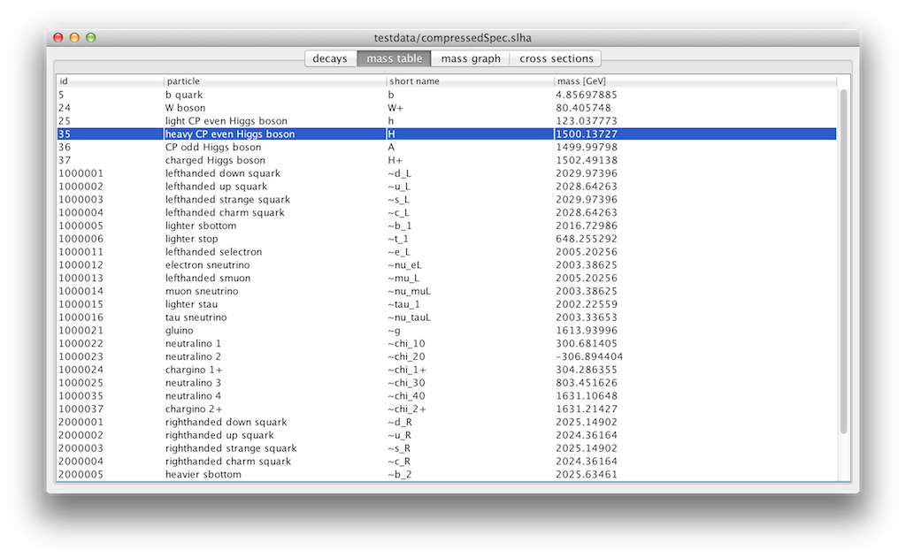

What is it ?
A java application to view SUSY Les Houches Accord (SLHA) files, released under the Apache License:
How to build it ?
The easiest way is building it with Apache maven:$ git clone https://github.com/andreh7/SLHAviewer.git
$ cd SLHAviewer
$ mvn package
slhaviewer.jar in the target/ subdirectory.
How to run it ?
If you have an SLHA fileexample.slha run slhaviewer as follows:
$ java -jar slhaviewer.jar example.slha
SLHA references
- "SUSY Les Houches Accord: Interfacing SUSY Spectrum Calculators, Decay Packages, and Event Generators", hep-ph/0311123
- "SUSY Les Houches Accord 2", arxiv:0801.0045
- "Extending the SLHA: cross section information", http://phystev.cnrs.fr/wiki/2013:groups:tools:slha